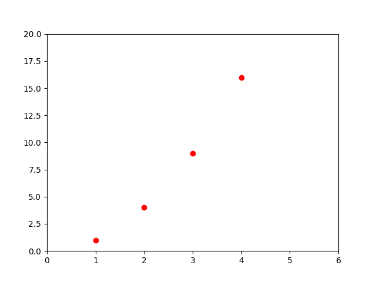
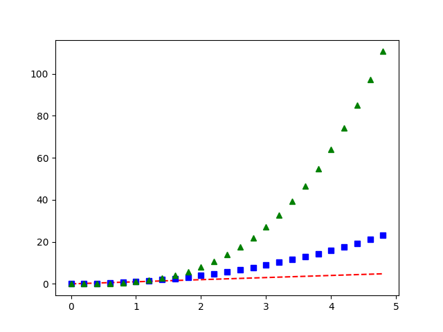

Note
Click here to download the full example code
Pyplot tutorial¶
An introduction to the pyplot interface.
Intro to pyplot¶
matplotlib.pyplot is a collection of functions
that make matplotlib work like MATLAB.
Each pyplot function makes
some change to a figure: e.g., creates a figure, creates a plotting area
in a figure, plots some lines in a plotting area, decorates the plot
with labels, etc.
In matplotlib.pyplot various states are preserved
across function calls, so that it keeps track of things like
the current figure and plotting area, and the plotting
functions are directed to the current axes (please note that "axes" here
and in most places in the documentation refers to the axes
part of a figure
and not the strict mathematical term for more than one axis).
Note
the pyplot API is generally less-flexible than the object-oriented API.
Most of the function calls you see here can also be called as methods
from an Axes object. We recommend browsing the tutorials and
examples to see how this works.
Generating visualizations with pyplot is very quick:
import matplotlib.pyplot as plt
plt.plot([1, 2, 3, 4])
plt.ylabel('some numbers')
plt.show()

You may be wondering why the x-axis ranges from 0-3 and the y-axis
from 1-4. If you provide a single list or array to
plot, matplotlib assumes it is a
sequence of y values, and automatically generates the x values for
you. Since python ranges start with 0, the default x vector has the
same length as y but starts with 0. Hence the x data are
[0, 1, 2, 3].
plot is a versatile function, and will take an arbitrary number of
arguments. For example, to plot x versus y, you can write:
plt.plot([1, 2, 3, 4], [1, 4, 9, 16])
Out:
[<matplotlib.lines.Line2D object at 0x7f648b823520>]
Formatting the style of your plot¶
For every x, y pair of arguments, there is an optional third argument which is the format string that indicates the color and line type of the plot. The letters and symbols of the format string are from MATLAB, and you concatenate a color string with a line style string. The default format string is 'b-', which is a solid blue line. For example, to plot the above with red circles, you would issue
See the plot documentation for a complete
list of line styles and format strings. The
axis function in the example above takes a
list of [xmin, xmax, ymin, ymax] and specifies the viewport of the
axes.
If matplotlib were limited to working with lists, it would be fairly useless for numeric processing. Generally, you will use numpy arrays. In fact, all sequences are converted to numpy arrays internally. The example below illustrates plotting several lines with different format styles in one function call using arrays.
Plotting with keyword strings¶
There are some instances where you have data in a format that lets you
access particular variables with strings. For example, with
numpy.recarray or pandas.DataFrame.
Matplotlib allows you provide such an object with
the data keyword argument. If provided, then you may generate plots with
the strings corresponding to these variables.
data = {'a': np.arange(50),
'c': np.random.randint(0, 50, 50),
'd': np.random.randn(50)}
data['b'] = data['a'] + 10 * np.random.randn(50)
data['d'] = np.abs(data['d']) * 100
plt.scatter('a', 'b', c='c', s='d', data=data)
plt.xlabel('entry a')
plt.ylabel('entry b')
plt.show()
Plotting with categorical variables¶
It is also possible to create a plot using categorical variables. Matplotlib allows you to pass categorical variables directly to many plotting functions. For example:
names = ['group_a', 'group_b', 'group_c']
values = [1, 10, 100]
plt.figure(figsize=(9, 3))
plt.subplot(131)
plt.bar(names, values)
plt.subplot(132)
plt.scatter(names, values)
plt.subplot(133)
plt.plot(names, values)
plt.suptitle('Categorical Plotting')
plt.show()
Controlling line properties¶
Lines have many attributes that you can set: linewidth, dash style,
antialiased, etc; see matplotlib.lines.Line2D. There are
several ways to set line properties
Use keyword args:
Use the setter methods of a
Line2Dinstance.plotreturns a list ofLine2Dobjects; e.g.,line1, line2 = plot(x1, y1, x2, y2). In the code below we will suppose that we have only one line so that the list returned is of length 1. We use tuple unpacking withline,to get the first element of that list:Use
setp. The example below uses a MATLAB-style function to set multiple properties on a list of lines.setpworks transparently with a list of objects or a single object. You can either use python keyword arguments or MATLAB-style string/value pairs:lines = plt.plot(x1, y1, x2, y2) # use keyword args plt.setp(lines, color='r', linewidth=2.0) # or MATLAB style string value pairs plt.setp(lines, 'color', 'r', 'linewidth', 2.0)
Here are the available Line2D properties.
| Property | Value Type |
|---|---|
| alpha | float |
| animated | [True | False] |
| antialiased or aa | [True | False] |
| clip_box | a matplotlib.transform.Bbox instance |
| clip_on | [True | False] |
| clip_path | a Path instance and a Transform instance, a Patch |
| color or c | any matplotlib color |
| contains | the hit testing function |
| dash_capstyle | ['butt' | 'round' | 'projecting'] |
| dash_joinstyle | ['miter' | 'round' | 'bevel'] |
| dashes | sequence of on/off ink in points |
| data | (np.array xdata, np.array ydata) |
| figure | a matplotlib.figure.Figure instance |
| label | any string |
| linestyle or ls | [ '-' | '--' | '-.' | ':' | 'steps' | ...] |
| linewidth or lw | float value in points |
| marker | [ '+' | ',' | '.' | '1' | '2' | '3' | '4' ] |
| markeredgecolor or mec | any matplotlib color |
| markeredgewidth or mew | float value in points |
| markerfacecolor or mfc | any matplotlib color |
| markersize or ms | float |
| markevery | [ None | integer | (startind, stride) ] |
| picker | used in interactive line selection |
| pickradius | the line pick selection radius |
| solid_capstyle | ['butt' | 'round' | 'projecting'] |
| solid_joinstyle | ['miter' | 'round' | 'bevel'] |
| transform | a matplotlib.transforms.Transform instance |
| visible | [True | False] |
| xdata | np.array |
| ydata | np.array |
| zorder | any number |
To get a list of settable line properties, call the
setp function with a line or lines as argument
In [69]: lines = plt.plot([1, 2, 3])
In [70]: plt.setp(lines)
alpha: float
animated: [True | False]
antialiased or aa: [True | False]
...snip
Working with multiple figures and axes¶
MATLAB, and pyplot, have the concept of the current figure
and the current axes. All plotting functions apply to the current
axes. The function gca returns the current axes (a
matplotlib.axes.Axes instance), and gcf returns the current
figure (a matplotlib.figure.Figure instance). Normally, you don't have to
worry about this, because it is all taken care of behind the scenes. Below
is a script to create two subplots.
The figure call here is optional because
figure(1) will be created by default, just as a subplot(111)
will be created by default if you don't manually specify any axes. The
subplot call specifies numrows,
numcols, plot_number where plot_number ranges from 1 to
numrows*numcols. The commas in the subplot call are
optional if numrows*numcols<10. So subplot(211) is identical
to subplot(2, 1, 1).
You can create an arbitrary number of subplots
and axes. If you want to place an axes manually, i.e., not on a
rectangular grid, use axes,
which allows you to specify the location as axes([left, bottom,
width, height]) where all values are in fractional (0 to 1)
coordinates. See Axes Demo for an example of
placing axes manually and Basic Subplot Demo for an
example with lots of subplots.
You can create multiple figures by using multiple
figure calls with an increasing figure
number. Of course, each figure can contain as many axes and subplots
as your heart desires:
import matplotlib.pyplot as plt
plt.figure(1) # the first figure
plt.subplot(211) # the first subplot in the first figure
plt.plot([1, 2, 3])
plt.subplot(212) # the second subplot in the first figure
plt.plot([4, 5, 6])
plt.figure(2) # a second figure
plt.plot([4, 5, 6]) # creates a subplot(111) by default
plt.figure(1) # figure 1 current; subplot(212) still current
plt.subplot(211) # make subplot(211) in figure1 current
plt.title('Easy as 1, 2, 3') # subplot 211 title
You can clear the current figure with clf
and the current axes with cla. If you find
it annoying that states (specifically the current image, figure and axes)
are being maintained for you behind the scenes, don't despair: this is just a thin
stateful wrapper around an object oriented API, which you can use
instead (see Artist tutorial)
If you are making lots of figures, you need to be aware of one
more thing: the memory required for a figure is not completely
released until the figure is explicitly closed with
close. Deleting all references to the
figure, and/or using the window manager to kill the window in which
the figure appears on the screen, is not enough, because pyplot
maintains internal references until close
is called.
Working with text¶
text can be used to add text in an arbitrary location, and
xlabel, ylabel and title are used to add
text in the indicated locations (see Text in Matplotlib Plots for a
more detailed example)
mu, sigma = 100, 15
x = mu + sigma * np.random.randn(10000)
# the histogram of the data
n, bins, patches = plt.hist(x, 50, density=1, facecolor='g', alpha=0.75)
plt.xlabel('Smarts')
plt.ylabel('Probability')
plt.title('Histogram of IQ')
plt.text(60, .025, r'$\mu=100,\ \sigma=15$')
plt.axis([40, 160, 0, 0.03])
plt.grid(True)
plt.show()
All of the text functions return a matplotlib.text.Text
instance. Just as with with lines above, you can customize the properties by
passing keyword arguments into the text functions or using setp:
t = plt.xlabel('my data', fontsize=14, color='red')
These properties are covered in more detail in Text properties and layout.
Using mathematical expressions in text¶
matplotlib accepts TeX equation expressions in any text expression. For example to write the expression \(\sigma_i=15\) in the title, you can write a TeX expression surrounded by dollar signs:
plt.title(r'$\sigma_i=15$')
The r preceding the title string is important -- it signifies
that the string is a raw string and not to treat backslashes as
python escapes. matplotlib has a built-in TeX expression parser and
layout engine, and ships its own math fonts -- for details see
Writing mathematical expressions. Thus you can use mathematical text across platforms
without requiring a TeX installation. For those who have LaTeX and
dvipng installed, you can also use LaTeX to format your text and
incorporate the output directly into your display figures or saved
postscript -- see Text rendering With LaTeX.
Annotating text¶
The uses of the basic text function above
place text at an arbitrary position on the Axes. A common use for
text is to annotate some feature of the plot, and the
annotate method provides helper
functionality to make annotations easy. In an annotation, there are
two points to consider: the location being annotated represented by
the argument xy and the location of the text xytext. Both of
these arguments are (x, y) tuples.

In this basic example, both the xy (arrow tip) and xytext
locations (text location) are in data coordinates. There are a
variety of other coordinate systems one can choose -- see
Basic annotation and Advanced Annotations for
details. More examples can be found in
Annotating Plots.
Logarithmic and other nonlinear axes¶
matplotlib.pyplot supports not only linear axis scales, but also
logarithmic and logit scales. This is commonly used if data spans many orders
of magnitude. Changing the scale of an axis is easy:
plt.xscale('log')
An example of four plots with the same data and different scales for the y axis is shown below.
# Fixing random state for reproducibility
np.random.seed(19680801)
# make up some data in the open interval (0, 1)
y = np.random.normal(loc=0.5, scale=0.4, size=1000)
y = y[(y > 0) & (y < 1)]
y.sort()
x = np.arange(len(y))
# plot with various axes scales
plt.figure()
# linear
plt.subplot(221)
plt.plot(x, y)
plt.yscale('linear')
plt.title('linear')
plt.grid(True)
# log
plt.subplot(222)
plt.plot(x, y)
plt.yscale('log')
plt.title('log')
plt.grid(True)
# symmetric log
plt.subplot(223)
plt.plot(x, y - y.mean())
plt.yscale('symlog', linthresh=0.01)
plt.title('symlog')
plt.grid(True)
# logit
plt.subplot(224)
plt.plot(x, y)
plt.yscale('logit')
plt.title('logit')
plt.grid(True)
# Adjust the subplot layout, because the logit one may take more space
# than usual, due to y-tick labels like "1 - 10^{-3}"
plt.subplots_adjust(top=0.92, bottom=0.08, left=0.10, right=0.95, hspace=0.25,
wspace=0.35)
plt.show()

It is also possible to add your own scale, see Developer's guide for creating scales and transformations for details.
Total running time of the script: ( 0 minutes 3.320 seconds)
Keywords: matplotlib code example, codex, python plot, pyplot Gallery generated by Sphinx-Gallery